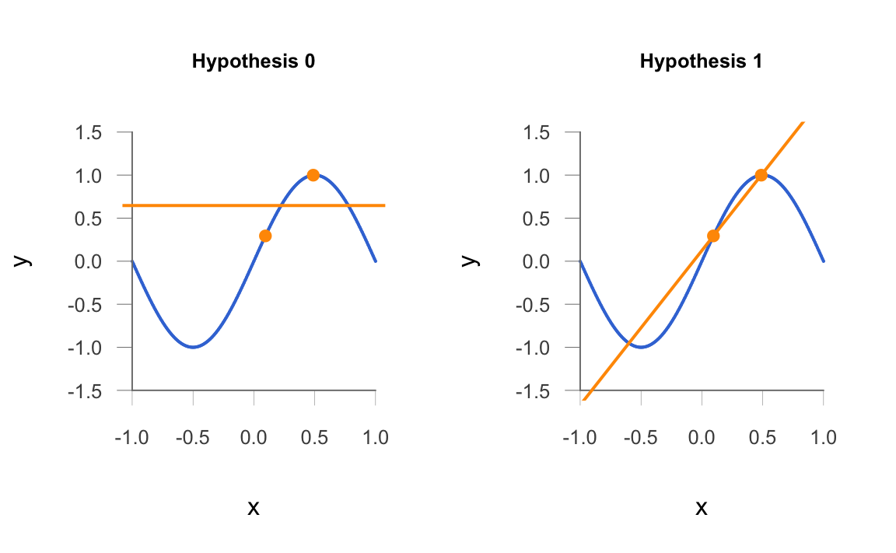

9 Bias-Variance Tradeoff
In this chapter we discuss one of the theoretical dogmas of statistical learning: the famous Bias-Variance tradeoff.
9.1 Bias-Variance Tradeoff
In the previous chapter we reviewed the concept of Mean Squared Error of a statistic (or estimator) \(\hat{\theta}\). As we saw, we can decompose \(\text{MSE}(\hat{\theta})\) as the sum of two components: Bias-squared and Variance.
\[ \text{MSE}(\hat{\theta}) = \text{Var}(\hat{\theta}) + \text{Bias}^{2} (\hat{\theta}) \]
In this chapter we extend this notion to the MSE of a regression model.
9.2 Motivation Example
Let’s start with a toy example. Consider a noiseless target function \(f(x) = sin(\pi x)\), with the input variable \(x\) in the interval \([-1,1]\), like in the following picture:
(#fig:plot_target)Target function
9.2.1 Two Hypotheses
Let’s assume a learning scenario in which, given a data set of \(n\) points, we fit the data using one of two models (see the idealized figure shown below):
\(\mathcal{H}_0\): Set of all lines of the form \(h(x) = b\)
\(\mathcal{H}_1\): Set of all lines of the form \(h(x) = b_0 + b_1 x\)
(#fig:plot_two_hypotheses)Two Learning hypothesis models
9.3 Learning from two points
In this case study, we will assume a data set of size \(n = 2\). That is, we sample \(x\) uniformly in \([-1,1]\) to generate a data set of two points \((x_1, y_1), (x_2, y_2)\); and fit the data using the two models \(\mathcal{H}_0\) and \(\mathcal{H}_1\).
For \(\mathcal{H}_0\), we choose the constant hypothesis that best fits the data (the horizontal line at the midpoint \(b = \frac{y_1 + y_2}{2}\)).
For \(\mathcal{H}_1\), we choose the line that passes through the two data points \((x_1, y_1)\) and \((x_2, y_2)\).
Here’s an example in R of two \(x\)-points randomly sampled from a uniform distribution in the interval \([-1,1]\), and their corresponding \(y\)-points:
\(p_1(x_1, y_1) = (0.0949158, 0.2937874)\)
\(p_2(x_2, y_2) = (0.4880941, 0.9993006)\)
With the given points above, the two fitted models are:
\(h_0(x) = 0.646544\)
\(h_1(x) = 0.123472 + 1.794385 \hspace{1mm} x\)

9.4 Bias-Variance Derivation
Bias-Variance (BV) depends on MSE, and is typically discussed within the confines of regression. BV is a good theoretical device; i.e. we can never compute it in practice (if we could, we would have access to \(f\), in which case we wouldn’t really need Statistical Learning in the first place!)
Given a data set \(\mathcal{D}\) of \(n\) points, and a hypothesis \(h(x)\), the expectation of the Squared Error for a given out-of-sample point \(x_o\), over all possible training sets, is expressed as:
\[ \mathbb{E}_{\mathcal{D}} \left [ \left( h^{(\mathcal{D})}(x_0) - f(x_0) \right)^2 \right ] \]
Assume the target \(f(x)\) is noiseless. Here, \(h^{(\mathcal{D})}(x_0)\) plays the role of \(\hat{\theta}\) and \(f(x_0)\) plays the role of \(\theta\). Hence, we need to introduce \(\bar{h} := \mathbb{E}_{\mathcal{D}} \left[ h^{(\mathcal{D})}(x_0) \right]\); i.e. the “average hypothesis”. Then:
\[\begin{align*} \mathbb{E}_{\mathcal{D}} \left [ \left( h^{(\mathcal{D})}(x_0) - f(x_0) \right)^2 \right ] &= \mathbb{E}_{\mathcal{D}} \left [ \left (h^{(\mathcal{D})}(x_0) - \bar{h} + \bar{h} - f(x_0) \right)^2 \right ] \\ &= \mathbb{E}_{\mathcal{D}} \Big [ \Big (\underbrace{h^{(\mathcal{D})}(x_0) - \bar{h}}_{a} + \underbrace{\bar{h} - f(x_0)}_{b} \Big)^2 \Big ] \\ &= \mathbb{E}_{\mathcal{D}} \left [ (a + b)^2 \right ] \\ &= \mathbb{E}_{\mathcal{D}} \left [ a^2 + 2ab + b^2 \right ] \\ &= \mathbb{E}_{\mathcal{D}} [a^2] + \mathbb{E}_{\mathcal{D}} [b^2] + \mathbb{E}_{\mathcal{D}} [2ab] \\ \end{align*}\]
Let’s examine the first two terms:
\(\mathbb{E}_{\mathcal{D}} \left [ \left (h^{(\mathcal{D})}(x_0) - \bar{h} \right)^2 \right ] = \text{variance} \left( h(x_0) \right)\)
\(\mathbb{E}_{\mathcal{D}} \left [ \left (\bar{h} - f(x_0) \right)^2 \right ] = \text{Bias}^2 \left( h(x_0) \right)\)
Now, what about the cross-term: \(\mathbb{E}_{\mathcal{D}} [2ab]\)?
\[\begin{align*} \mathbb{E}_{\mathcal{D}} \left[ 2 \left( h^{(\mathcal{D})}(x_0) - \bar{h} \right) \left( \bar{h} - f(x_0) \right) \right] & \propto \mathbb{E}_{\mathcal{D}} \left[ h^{(\mathcal{D})}(x_0) \right] - \bar{h} \\ & = \bar{g} - \bar{g} = 0 \end{align*}\]
Hence, under the assumption of noiseless \(f\), we have that the expectation of the Squared Error for a given out-of-sample point \(x_0\), over all possible training sets, is expressed as:
\[ \mathbb{E}_{\mathcal{D}} \left [ \left( h^{(\mathcal{D})}(x_0) - f(x_0) \right)^2 \right ] = \underbrace{\mathbb{E}_{\mathcal{D}} \left [ \left (h^{(\mathcal{D})}(x_0) - \bar{h}(x_0) \right)^2 \right ]}_{\text{variance}} + \underbrace{\left [ (\bar{h}(x_0) - f(x_0))^2 \right ] }_{\text{bias}^2} \]
9.4.1 Noisy Target
Now, when there is noise in the data we have that: \(y = f(x) + \epsilon\). If \(\epsilon\) is a zero-mean noise random variable with variance \(\sigma^2\), the bias-variance decomposition becomes:
\[ \mathbb{E}_{\mathcal{D}} \left [ \left (h^{(\mathcal{D})}(x_o) - y_o \right)^2 \right ] = \text{bias}^2 + \text{var} + \sigma^2 \]
Notice that the above equation assumes that the squared error corresponds to just one out-of-sample (i.e. test) point \((x_0, y_0) = (x_0, f(x_0))\).
9.4.2 Types of Theoretical MSEs
Keep in mind that there are different flavors of (theoretical) MSE:
\(\mathbb{E}_{\mathcal{X}} \left[ \left( h(x_0) - f(x_0) \right)^2 \right]\)
\(\mathbb{E}_\mathcal{D} \left[ \left( h^{\mathcal{D}}(x_0) - f(x_0) \right)^2 \right]\)
\(\mathbb{E}_{\mathcal{X}} \left[ \mathbb{E}_\mathcal{D} \left\{ \left( h^{\mathcal{D}}(x_0) - f(x_0) \right)^2 \right\} \right]\)
9.5 The Tradeoff
We finish this chapter with a brief discussion of the so-called bias-variance tradeoff.
Bias
Let’s first focus on the bias, \(\bar{h} - f(x)\). The average \(\bar{h}\) comes from a class of hypotheses (e.g. constant models, linear models, etc.) In other words, \(\bar{h}\) is a prototypical example of a certain class of hypotheses. The bias term thus can be interpreted as a measure of how well a particlar type of hypothesis \(\mathcal{H}\) (e.g. constant model, linear model, quadratic model, etc.) approximates the target function \(f\).
Variance
Let’s focus on the variance, \(\mathbb{E}_\mathcal{D} \left[ (h^{(\mathcal{D})}(x) - \bar{g} )^2 \right ]\). This is a measure of how close a particular \(h^{(\mathcal{D})}(x)\) can get to the average functional form \(\bar{h}\). Put ir in other terms, how precise is our particular function compared to the average function?
Tradeoff
Ideally, a model should have small variance and small bias. But, of course, there is a tradeoff between these two (hence the Bias-Variance tradeoff). That is, decreasing bias tends to result in increases variance, and vice-versa.
To decrease bias, a model has to be more flexible/complex. How complex? In theory, to decrease bias, one needs “insider” information. That is, to truly decrease bias, we need some information on the form of \(f\). Hence, it is nearly impossible to decrease bias. We therefore put our efforts towards decreasing variance.
One way to decrease variance would be to add more training data. However, there is a price to pay: we will have less test data.
We could reduce the dimensions of our data (i.e. play with lower-rank data matrices through, for example, PCA).
We could also apply regularization. At its core, this notion relates to making the size of a model’s parameters small. Consequently, there is a reduction in the variance of a model.